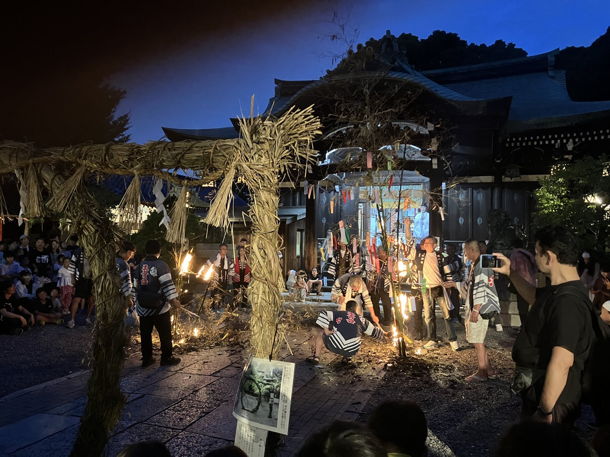

住吉・生根神社の七夕送り――茅の輪と笹焼き、ひとつながりの祓い
七夕といえば笹に短冊を吊るして願い事をする行事だが、その「終わり方」には地域によって大きく二つの系統がある。ひとつは水に流す「七夕送り」、もうひとつは火で焚き上げる「笹もやし」。そしてもともと七夕は、旧暦ではお盆の入り口に位置づけられた禊の行事でもあった。
7月7日の夕暮れ、住吉大社の北にある生根神社（大阪市住吉区）を訪ねると、夏祭りへ向けて据えられた茅の輪の前で、氏子たちが短冊のついた笹を松明で焚き上げる場面に行き会った。今回はこの光景を手がかりに、七夕と盆をつなぐ古い暦の感覚をたどってみたい。

七夕の「送り方」――水と火
ひとつは水で送る方法。七夕の翌日8日の早朝に、笹ごと川や海に流す「七夕送り」「七夕流し」と呼ばれる風習で、これがもともとの古い形とされる。水に託して穢れを祓い、願いを神に届けるという発想は、お盆の精霊流しにも通じるものだ。
もうひとつは火で送る方法。短冊を吊るした笹を焚き上げ、煙とともに願いを天に届ける「笹もやし」の風習。正月のどんど焼きと構造的には同じで、火の力で浄化し、天にお還しするという考え方に基づいている。現代では環境問題から川に流すことが難しくなり、お焚き上げが主流になりつつある。
七夕は盆の入り口だった
そもそも旧暦では、七夕はお盆（旧暦7月15日）の入り口にあたる行事だった。七夕に水浴びをして身を清めたり、笹飾りを川に流したりするのは、先祖の精霊を迎えるための禊の意味があったとされる。東北から九州にかけては、七夕の日に真菰や藁で馬を作る「七夕馬」の風習も伝わっており、お盆の精霊馬のルーツとも言われている※1。七夕と盆は、もともとひとつながりの行事だったのだ。
新暦に移行してからは、七夕は7月7日、お盆は8月中旬と分離してしまい、その連続性は見えにくくなった。しかし一部の地域では、今もなお七夕を夏の祓い・清めの始まりとして位置づける古い暦の感覚が、祭りの中に息づいている。
「奥の天神」、生根神社
大阪市住吉区。住吉大社の北に、「奥の天神」と通称される生根神社（いくねじんじゃ）がある※2。
延喜式神名帳に大社として記録される古社で、社伝によれば住吉大社の創建以前から鎮座するという。祭神の少彦名命は造酒の祖神とされ、神功皇后がこの地で酒を造り住吉三神に献じたという古伝も残る。江戸時代には住吉大社の摂社として推移したが、明治5年（1872年）に住吉大社から分離独立し、現在に至る。
独立したとはいえ、住吉エリアの祭り文化とのつながりは今も健在だ。住吉大社が主催する近隣神社のお神輿大集合イベントには、生根神社の神輿もちゃんと参加している。「別だけどつながっている」という距離感は、もともと摂社でありながら式内大社でもあるという、この社の歴史的な立ち位置そのものを映している。
茅の輪の前で笹を焚く
7月7日、夕暮れの生根神社を訪ねた。境内にはすでに夏祭（7月18・19日の宵宮・本祭）の準備として茅の輪が据えられている。その茅の輪の前に、色とりどりの短冊を吊るした竹笹が立てられ、法被姿の氏子たちが松明を手に集まっていた。
法被の背には「生青会」の文字。生根神社に付く青年会で、お神輿の担ぎ手をはじめ、年中行事の実働を一手に担う組織だ。全国的に祭りの担い手不足が深刻化する中、都市部の住吉界隈でこうした青年会がしっかり機能しているのは、それ自体が得がたいことだと思う。
やがて松明の火が笹に移され、短冊ごと焚き上げられていく。茅の輪の藁越しに立ち上る炎と煙。参拝者の願いが天に届けられる瞬間だ。
この光景を見て気づくのは、茅の輪くぐりと七夕の笹焚きが、同じ「祓い・清め」の機能を持っているということだ。茅の輪は夏越の祓として半年分の穢れを祓うもの。七夕の笹焚きも、本来は盆前の禊という性格を持っている。二つの行事が同じ境内で重なるのは、暦の上でも信仰の構造としても、実は自然なことなのだ。
祭りの暦に組み込まれた七夕
生根神社にとって、七夕祭りは独立した行事というよりも、7月後半の夏祭本番へ向かう流れの中に位置づけられている。
お焚き上げが終われば、生青会の面々はそのまま夏祭の準備に入る。宵宮と本祭の前には神輿が氏地を巡行し、境内は一気に賑わいを増す。七夕の日は、いわばこの祭りシーズンの実質的な始動日なのだ。
茅の輪が据わった境内で短冊の笹を焚き上げるという光景は、夏越の祓と七夕送りと盆の入りが一体だった旧暦の感覚を、新暦のスケジュールの中で今も体感できる場面といえる。まず祓い清めて、それから神を迎え、神輿で氏地を巡って祝福を配る。その一連の流れが、この小さな境内の中に凝縮されている。
都市化が進んだ大阪の市街地に、こうした祭りの暦がまだ生きている。それを支えているのは、派手な観光イベントではなく、氏子たちの手触りが残った地道な年中行事の積み重ねだ。
七夕の夜、煙とともに天に届けられた願い事は、十日後の夏祭で花開く。